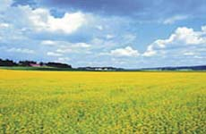
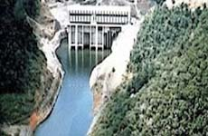
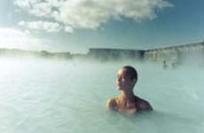
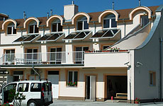
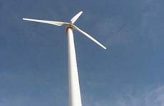

OBNOVITEĽNÉ ZDROJE ENERGIE
Vývoj spotreby energie na našej planéte má prudko rastúci charakter. Zásoby fosílnych palív nie sú také veľké, aby si ľudstvo mohlo dovoliť plne sa na ne spoliehať. Navyše, nerovnomernosť ich rozdelenia a z toho vyplývajúca nutnosť ich prepravy na veľké vzdialenosti neprispieva k snahám o zachovanie trvalo udržateľného rozvoja. Z tohto dôvodu sa javí ako najvýhodnejšie využívať energiu priamo na mieste jej vzniku.
Obnoviteľné zdroje energie sú jednou z ciest, ktorou je možné sa uberať, ak chceme zabezpečiť dostatok energie. V súčasnosti ich využívanie vo väčšine krajín nie je natoľko rozsiahle, aby komplexne pokrylo energetickú spotrebu. Tvorí však čoraz vyššie percento v podiele na využívaní jednotlivých druhov energie. O aké zdroje vlastne ide? Slovo "obnoviteľné" znamená, že tieto energetické zdroje nie sú konečné, dajú sa prirodzenou cestou "obnovovať". Napríklad biomasa, energia vodných tokov, geotermálna, slnečná či veterná energia sú toho typickým príkladom.
Vysoký záujem o obnoviteľné zdroje energie však nie je spôsobený len obmedzenými zásobami uhlia, či ropy. Spaľovanie fosílnych palív vedie k vážnemu poškodzovaniu životného prostredia. Ani urán, využívajúci sa v jadrových elektrárňach, nie je tým spásonosným riešením. Jeho zásoby sú rovnako konečné. Hoci nespôsobuje žiadne emisie skleníkových plynov, problémy s bezpečnosťou, tvorbou rádioaktívnych odpadov a odpor verejnosti znamená, že ani táto cesta nie je celkom jasná a jediná, ako trvalo riešiť energetické potreby ľudstva.
Prelomovou vo vývoji bola možno konferencia v japonskom Kjóte, kde sa o tejto problematike intenzívne rokovalo. V rámci Európskej únie sa otázky smerovania energetiky jednotlivých štátov posudzujú neustále. Do roku 2020 sú pre rozvoj obnoviteľných zdrojov energie (OZE) stanovené konkrétne ciele. V januári 2008 Európska komisia zverejnila klimaticko-energetický balíček. Tento má naplniť ciele Rady EÚ z marca 2007: 20 % zníženie emisií, 20 % podiel obnoviteľných zdrojov energie na konečnej spotrebe energie a 10% podiel biopalív v doprave.
Aký je potenciál obnoviteľných zdrojov energie (OZE) na Slovensku? Celkový potenciál sa uvádza 96 753 TJ/rok (resp. 26 876 GWh/rok). Ak k tomu pripočítame aj veľké vodné elektrárne, stúpne toto číslo na 116 816 TJ/rok (resp. 32 449 GWh/rok). Nasledujúca tabuľka poskytuje prehľad o technicky využiteľnom potenciáli (TVP) pre OZE na Slovensku. Celková hodnota technicky využiteľného potenciálu zahŕňa výrobu tepelnej i elektrickej energie.
| Druh | Technicky využiteľný potenciál | Výroba elektrickej energie | |
|---|---|---|---|
| GWh/rok | TJ/rok | GWh/rok | |
| Spolu (bez veľkých vodných elektrární) | 26 876 | 96 753 | 4 506 |
| Spolu | 32 449 | 116 816 | 10 079 |
| Geotermálna energia | 6 300 | 22 680 | 60 |
| Veterná energia | 605 | 2 178 | 605 |
| Slnečná energia | 5 200 | 18 720 | 1 537 |
| Malé vodné elektrárne | 1 034 | 3 722 | 1 034 |
| Veľké vodné elektrárne > 10 MWe | 5 573 | 20 063 | 5 573 |
| Biopalivá | 2 500 | 9 000 | |
| Biomasa | 11 237 | 40 453 | 1 270 |
Pokiaľ ide o využitie potenciálu OZE na výrobu elektrickej energie, v tabuľke uvedená hodnota 4 506 (resp. 10 079 GWh/rok) predstavuje konzervatívny odhad. Zvýšenie výroby elektrickej energie bude možné v prípade, že sa vytvoria v SR podmienky na ekonomicky efektívne zavádzanie nových technológií a na výrobu elektrickej energie z nich
Energia z biomasy
Najväčší podiel až 35% z celkového technicky využiteľného potenciálu pripadá na biomasu s hodnotou 40 453 TJ/r (11 237GWh/rok).
V našich podmienkach je reálne používať na energetické účely lesnú biomasu vrátane energetických porastov, poľnohospodársku biomasu, odpady z drevospracujúceho a potravinárskeho priemyslu a odpadovú biomasu z priemyselnej a komunálnej sféry.
Vodná energia
Celkový technicky využiteľný potenciál vodnej energie - ak uvažujeme všetky vodné elektrárne - predstavuje 23 786 TJ/ rok (6 607 GWh/rok), čo je takmer 20,4 % z celkového potenciálu OZE. V prípade, že k obnoviteľným zdrojom priradíme len malé vodné elektrárne, TVP vodnej energie poklesne na 3 722 TJ/rok/rok (1 034 GWh/rok) čo činí 3,2% z celkového potenciálu OZE.
Takmer 40,8 % potenciálu vodnej energie predstavujú toky patriace do povodia Váhu. Povodie Hrona má podiel 34,44 %, Bodrog a Hornád 17,8 %. Na povodie Dunaja pripadá 6,76 %-ný podiel. Všetky uvedené podiely jednotlivých povodí sa vzťahujú na malé vodné elektrárne do 10 MW (3 722 TJ/rok).
Celkový teoretický hydroenergetický potenciál na Slovensku predstavuje 13 679 GWh/rok. Značná časť vodnej energie je rozptýlená v malých vodných tokoch, preto je využiteľná len v malých vodných elektrárňach s výkonom nižším ako 10 MW.
Geotermálna energia
Takmer rovnaký podiel na TVP ako celá vodná energia má geotermálna energia s hodnotou 22 680 TJ/rok (6 300 GWh/rok). Geotermálna energia sa tak stáva druhým najväčším OZE na Slovensku. Slovensko má dobré podmienky pre rozvoj a využitie energie geotermálnych vôd.
Na základe výskumu a prieskumu je na území Slovenska vyčlenených 25 perspektívnych oblastí s akumuláciou geotermálnych vôd s teplotami od 25°C do 150°C. Prevažná časť oblastí má teplotu vôd vhodnú pre vykurovanie bytov a priemyselných priestorov.
Slnečná energia
Množstvo slnečnej energie dopadajúcej na územie SR je približne 200-násobne väčšie ako je súčasná spotreba primárnych energetických zdrojov u nás.
Po zvážení reálnych možností inštalácie slnečných kolektorov a využívania fotovoltaických článkov je stanovený technicky využiteľný potenciál slnečnej energie na 5 200 GWh/rok (18720 TJ/rok), čo je zhruba 16 % z celkovej hodnoty OZE pre SR. Z toho 70 % by sa malo využiť v termálnych solárnych systémoch s kolektormi.
Veterná energia
Potenciál veternej energie je v SR malý, s hodnotou 605 GWh/ rok sa podieľa na celkovom potenciáli 1,9 %. Je to dané tým, že na Slovensku je z hľadiska vhodných veterných podmienok málo vyhovujúcich oblastí a konkrétnych lokalít.
Všeobecne sa udáva, že prijateľné podmienky na využívanie veternej energie majú lokality, kde je priemerná celoročná rýchlosť vetra vyššia ako 6,5 m/s, čo na Slovensku predstavuje len 191 km2, čo je len 0,39 % z celkovej rozlohy Slovenska. Lokality s nižšími rýchlosťami sa považujú za slabé.
Oblasti, kde je z hľadiska rýchlosti vetra najvýhodnejšie inštalovať veterné turbíny, majú však na to najhoršie podmienky z hľadiska technickej realizácie.